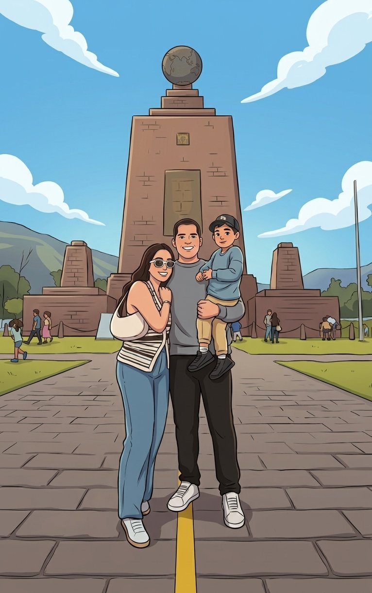

100 Citas
Nuestra Historia
0 / 100
Cita recomendada del día
today
chevron_right
—
Toque para ver
calendar_today
—
—
Hecha ✓

—
Las citas que ya vivieron juntos
Guarda recuerdos de sus citas
Tu diario está en blanco.
¡Escribe su primer recuerdo!
Construyendo recuerdos juntos